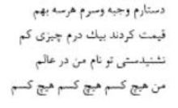
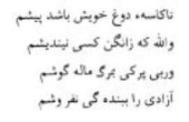

Mevlânâ’ya ait hayâl mahsulü birçok resimler, portreler, minyatürler görülmektedir. Hatta o devirlerde Mevlânâ’nın resmini yapan ressamlardan da bahsedilmektedir. Biz, bu resimlere bakarak Mevlânâ’nın fizyonomisini, dış görünüşünü tasavvur edebilir miyiz?
Anlattıklarına göre Mevlânâ zayıf, solgun benizli, narin vücutlu bir kişi idi. Derler ki bir gün hamama girmiş; orada, aynada kendini çıplak olarak görünce çok zayıf olduğunu fark etmiş, kendine acımış da “Bütün ömrümde, bir kimseden utanmamıştım, fakat bugün aynada kendi zayıf vücudumu görünce kendimden utandım.” diye buyurmuştu. Mevlânâ solgun benizli olmasına rağmen gayet nûrânî, mehabetli bir görünüşe malikti.
Mübarek velinin gözleri, çok çekici, keskin ve coşkunlukla dolu idi. Gözlerinin nûrlu bakışı öyle tesirli idi ki kimse onun gözlerine dikkatle bakmaya cesaret edemezdi. Bu görüşler, bu tasvirler Mevlânâ’nın dış görünüşüne aittir. Onun sireti, iç âlemi nasıldı?
Mevlânâ Mesnevî’de şöyle demektedir:
“Acaba, ben kendi yüzümü nasıl görebilirim? Acaba, benim nasıl bir rengim var? Ben ak yüzlü biri miyim? Yoksa kirli, günahkâr yüzlü bir kişi miyim? Bu hâli nasıl görebilirim? Böylece ben, iç yüzümü, can suretimi görmek için çalışıyor, araştırmalar yapıyordum. Fakat iç yüzüm kimseden görünmüyordu. Hiçbir şey, beni, bana göstermiyordu. Nihayet düşündüm, kendi kendime dedim ki: Ayna neden icat edildi? Ne işe yarar? Herkes aynaya bakarak kendisinin kim olduğunu, nasıl olduğunu görsün, bilsin diye bulunmamış mı? Fakat bildiğimiz aynalar, insanların dış yüzlerini, suretlerini göstermek için yapılmıştır. Can yüzümüzün aynası nasıldır? Nerededir? Can aynası, çok pahalıdır, çok değerlidir. Can aynası, ancak sevgilinin yüzüdür. Bizim iç yüzümüzü, can yüzümüzü gösteren sevgilinin yüzü bu diyarda yoktur. O mânâ diyarındandır?” (Mesnevî, II/95)
Mevlânâ’nın iç âlemini, ahlâk ve karakterini aksettirecek sevgili nerede bulunur ki? Sultanü’l-Âşıkîn nasıl tasvir edilebilir?
Bilginlerin Sultanı olan babasının ilmiyle, ahlakıyla beslenen, Seyyid Burhaneddin-i Tirmizî’nin himmetine mazhar olan ve aşk potasında yanıp yakılan bir veliyi gereği gibi anlamaya ve anlatmaya kimsenin gücü yetmez. İlâhî aşkın etkisiyle o, kinden, nefretten, kötülüklerden, benlikten, şöhretten ve bütün beşerî isteklerden kurtulmuş üstün bir varlıktı. Hayır ve kemâl sahibi, aşk ve irfan sahibi idi. Mevlânâ’da büyük bir tahammül, yumuşak huyluluk vardı ki, herkesi hayrette bırakıyordu. Gönül gözleri kapalı olan ve kendini çekemeyenler tarafından ona reva görülen dil uzatmalara, dedikodulara, uygunsuz sözlere hiç acı cevap vermez; güzel huyu ile, müsamahalı görüşü ile onları yola getirirdi.
O, büyük bir âlim, büyük bir veli olduğu hâlde çok alçak gönüllü idi. Büyük küçük, yüksek mevkide bulunsun, halktan olsun herkese tevâzu ile muamele ederdi. Mevlânâ’nın hayatında kibir, gurur, kendini beğenmişlik asla görülmezdi.
Hazret-i Mevlânâ tam Muhammedî yolda, Muhammedî ahlâkta olduğu için her vesile ile kendini küçük görmüş, gururdan kaçınmıştır. Şu rubaisini ibretle okumamız gerekir:

“Sarığıma, cübbeme, başıma, bu her üçüne birden paha biçtiler; her üçünü beraber değerlendirdiler de bunlara bir kuruştan da daha az paha biçtiler. Sen, dünyada, benim adımı hiç mi duymadın? Ben bir hiçim, hiçim hiç...”
Gerçekten de insanların bir kısmı, zenginlikleri ile, mevkileri ile övünürler, bir kısmı bilgileri, marifetleri, hünerleri, meslekleri ile gurura kapılırlar. Hak yolunda yürüdüklerini sanan gafiller de tesbihleri, namazları, yaptıkları hac vazifeleri ile kendilerini halktan üstün görürler. Hazret-i Mevlânâ’nın, her fazileti, her meziyeti gibi yüksek tevâzuunun da nihâyetsizliğini gösteren bu rubâi, çok dikkat çekicidir. Mevlânâ, kendisinin bir ilham güneşi olan o mübârek başına, o başı bir hâle gibi saran ilim ve irfan nûrunun sembolü olan sarığına, Hakk’ın güzellik cevherine bir mahfaza olan cübbesine ne değer veriyor?
Başka bir rubâisinde de aynen şöyle buyurmaktadır:
“Sen, sende oldukça ve sen, kendine taptıkça senden, sana yol vermezler. Senin varlığın, kendini bir şey sanman düşüncesi, sende bulundukça huzur bulurum zannetme. Çünkü sen, hâlâ benlik putuna tapmadasın.”
Hazret-i Mevlânâ, çocuğa, kadınlara, erkeklere, herkese sevgi ve saygı gösteriyordu. Mevlânâ bir gün, Konya’da bir mahalleden geçiyordu. O sırada çocuklar yolda oynuyorlardı. Uzaktan Mevlânâ’yı görünce hepsi birden koşarak geldiler, Hazretin önünde saygı ile eğildiler. Mevlânâ da onları sevgi ile selâmladı, önlerinde eğildi. O sırada çocuklardan biri uzakta kalmıştı. “Durun ben de geliyorum.” diye bağırdı. Mevlânâ, çocuk gelinceye kadar bekledi. Gelince onu da selâmladı, okşadı, onun da gönlünü hoş etti.
Babası Sultanü’l-Ulema gibi Hazret-i Mevlânâ da pâdişahların, vezirlerin, emirlerin sevgisini, itibarını kazanmıştı. Mevki sahibi kişiler, onunla görüşmeyi çok arzu ediyorlardı. Fakat Hazret-i Mevlânâ onların davetini nadiren kabul eder; o, daha çok fakirlerle, zaruret içinde olanlarla düşüp kalkardı. Onun kimsesizlere, zavallılara, yoksullara yönelik davranışlarını değerlendiremeyenler, görünüşe, gösterişe bağlı kalanlar, Mevlânâ’yı tenkit ediyorlardı. “Mevlânâ’nın müritleri acayip adamlardır, onların çoğu şehrin işçileri, sanat erbabı kişilerdir; zengin adamlar, bilginler onun etrafında az dolaşıyorlar. Her nerede bir terzi, bakkal, manifaturacı varsa Hazret-i Mevlânâ onları müritliğe kabul ediyor.” diye dedikodu yayıyorlardı. Mevlânâ kulağına kadar gelen bu sözlere kulak asmıyor, kimseye darılmıyordu.
İhtiyacı olanlardan yardımını, feyzini esirgemiyordu. İtiraz edenlere kızmıyor, onlara gönül alıcı, tatlı cevaplar veriyor, diyordu ki: “Eğer benim müritlerim, bana ihtiyacı olmayan kişiler olmasaydı ben onların müritleri olurdum. Bana muhtaç oldukları için ben, onları müritliğe kabul ettim. Böylece istedim ki onlar, değişsinler, huzura kavuşsunlar, iyi kişiler olsunlar.”
Eflâkî hazretlerinin yazdığına göre (Tahsin Yazıcı tercümesi 1/257) bir gün Mevlânâ, müritlerine, “Bütün veliler nefsi köreltmek, müritlerinin benliklerini kırmak için onlara, dilencilik kapısını açmışlar. Ellerinde kandil, sırtlarında zembil taşıyarak zengin adamlardan zekât, sadaka ve hediye almışlardır. Biz ise kendi dostlarımıza dilencilik kapısını kapadık. Dostlarımızın çalışarak kendilerini geçindirmelerini, ticaret, memurluk, veya herhangi bir el emeği, alın teri ile geçinmelerini temin etmek için Peygamber Efendimiz’in (s.a.v.) ‘Gücün yettikçe istemekten sakın.’ hadisini yerine getirdik. Bizim müritlerimizden kim bu yolu tutmazsa, bizim nazarımızda onun bir pul kadar kıymeti yoktur.” diye buyurdu.
Mevlânâ bazı hükümdarların, vezirlerin, emirlerin ve zengin kişilerin zekât ve sadaka olarak gönderdikleri paraların hepsini ihtiyacı olanlara veriyor, yoksullara dağıtıyordu. Mevlânâ fetva parası ve medreselerde okuttuğu derslere karşılık verilen ücretle kimseye muhtaç olmadan geçiniyor ve kendisini başkalarının minneti altında bırakmıyordu. O bir rubâisinde şöyle diyordu:

“Ayran kâsem önümde oldukça Allah’a yemin ederim kimsenin balında gözüm yoktur. Yoksulluk, beni ölümle sıkıştırsa bile hürriyeti kulluğa satmam.”
Hazret-i Mevlânâ dünyadan ve dünyalıklardan yüz çevirmişti. Tam dervişâne bir hayat sürerdi. Evinde bir şey bulunmadığı zaman sevinir, “Allah’a şükürler olsun, bugün evimiz Peygamber’in evine benzedi.” derdi. Zengin olmadığı hâlde yoksullara yardımda bulunurdu. Muhtaç olanlara yaptığı iyilikleri, ihsanları gizler, hiç kimsenin bilmesini istemezdi.
Medresedeki yoksul talebelere yaptığı yardımı da gizlerdi. Şöyle ki, her bir talebenin oturduğu minderin yahut keçenin altına, onların liyakatlerine, ihtiyaçlarına göre gereken parayı, hiç kimseye söylemeden, göstermeden kordu. Talebeler oturduktan minderin tozunu silkmek istedikleri zaman, kaldırdıkları minderin altında paraları bulurlar, şaşırır kalırlardı.
Mevlânâ’nın insanlara karşı duyduğu saygı da tarif edilemeyecek kadar çoktu. Hazret bir topluluğa girdiği zaman kendisine saygı duyularak ayağa kalkarlardı. Mevlânâ için herhangi bir kişiyi oturduğu yerden kalkmaya zorladıkları zaman hazret bu hâle çok üzülürdü.
Eflâkî’nin yazdığına göre Mevlânâ bir gün hamama gitmişti. Hazretin yıkanma yerine girmesi ile çıkması bir oldu. Hemen elbisesini giydi, gitmeye hazırlandı. Dostları, “Efendimiz, neden çabucak çıktınız?” diye sordular. Buyurdu ki: “Tellak, beni görünce havuzun kenarında oturan bir kişiyi bana yer ayırmak için oturduğu yerden uzaklaştırdı. Benim yüzümden rahatsız edilen o kişiye karşı mahcup oldum, bu hâle çok üzüldüm.”
Hazret-i Mevlânâ’nın iyi huyları, merhameti, kibarlığı, bir kelime ile insanlığı anlatılmakla bitmez ki! O, yüz sene önce, yalnız İslâm memleketlerinde değil, bütün dünyada, kölelerin, cariyelerin hayvanlar gibi para ile alınıp satıldığı ve bu zavallı insanların evlerde, bahçelerde, tarlalarda, her türlü işlerde kullanıldığı bir devirde yaşadığı hâlde, “Bende köle yaratmayan bir Allah’a îman var.” inancına varmış ve Kur’ân-ı Kerîm’ in Lokman Sûresi’nin 28. âyetinde beyan buyrulduğu gibi (Sizin yaratılmanız ve dirilmeniz bir tek nefis, bir tek kişi gibidir.) bütün insanları bir ve eşit yapmıştır. Onun nazarında, köle, cariye, efendi diye bir şey yoktu.
Bir gün Mevlânâ’nın kızı Melike Hatun kendi cariyesini azarlarken Hazret-i Mevlânâ ansızın kapıdan içeri girmiş ve kızını hiddetli bir hâlde görerek “Cariyeyi niçin azarlıyorsun? Ne hakla onu incitiyorsun? O, hanım, sen de ona câriye olsaydın ne yapardın? İster misin ki, bütün dünyada, Allah’tan başka hiç kimsenin köle ve cariyesi yoktur diye bir fetva vereyim. Aslında, kölelerin ve cariyelerin hepsi de bizim kardeşlerimiz ve hemşirelerimizdir.” diye kızına çıkıştı. Kızı hatasını anladı, af diledi, tövbe etti ve o câriyeyi azad etti.
Mevlânâ yalnız yoksullara, kölelere, câriyelere değil herkese, hatta hayvanlara bile acıyor, onların yardımına koşuyordu. Şeyh Nefîseddin hazretleri rivâyet etti ki: “Bir gün Mevlânâ hazretleri bana, iki dirhemlik çörek al, bana getir.’ diye buyurdu. Gittim derhal çörekleri aldım, getirdim. Mevlânâ çörekleri benden aldı ve bir mendile koyup gitti. Ben, yavaş yavaş onun arkasından yürüyordum. Nihayet Mevlânâ bir harabeye vardı. Orada, dişi bir köpeğin yavrulamış olduğunu gördüm. Mevlânâ çöreklerin hepsini köpeğe doğradı, verdi. Ben, bu büyük velinin bu merhametinden ötürü şaşırıp kalmıştım. Mevlânâ, ‘Yedi gün, yedi gecedir, bu zavallı köpek bir şey yememiştir. Yavruları yüzünden de buradan ayrılamıyordu.’ diye buyurdu.”
Rivayet edildiğine göre, bir gün bir Rum usta, Mevlânâ’nın evinde ocak yapıyordu. Dostlar, şaka olsun diye, o Rum ustaya, “Niçin Müslüman olmuyorsun? Dinlerin en iyisi İslâm dinidir.” dediler. O, “Elli seneye yakındır ki, ben İsa dinindeyim. Dinimi terk hususunda ondan korkuyor, utanıyorum” dedi. Bu sözleri duyan Mevlânâ, “İmanın sırrı korkudur, her kim, Allah’tan korkarsa, o Hıristiyan da olsa din sahibidir, yani dinsiz değildir.” diye buyurdu. Mevlânâ’nın bu müsamahalı sözleri üzerine o Hıristiyan mimar Müslümanlığı kabul etti. (Menâkıbü’l-Ârifîn, I/516)
Bir gün Mevlânâ hazretleri buyurdu ki: “Hoca Fakih Ahmed, tam kırk senedir, gece gündüz sonsuz mücadelede bulundum. Birçok riyazet çektim, istedim ki, şu bende bulunan “bilginlik illeti”, kendini âlim sanma ve gurura kapılma hastalığı benden gitsin ve o perdeden dışarı çıkayım, bütün gayretime rağmen bu illetten kurtulamadım. Hâlâ bende, ondan bir eserin kaldığını görüyorum. Gönül levhası, ne kadar saf olursa, Hakk’a yakınlık da o kadar fazla olur.”
Yine buyurdu ki: “Dünyada bilginlerin sultanı olan babam Bahaeddin Veled daima şöyle derdi: ‘Eğer bende bu tahsille elde edilen bilgiler olmasaydı, o mânâ, ilimden daha kuvvetli olurdu.’”
“Kalbimi, dünyevî bilgilerden arındırınca, ilimlerden temizleyince Hakk’a daha çok aşinalık peyda ettim, daha çok yakınlık duydum. Benliğin, varlığın karanlığından kurtuldum da aydınlığa kavuştum.” (Menâkıbü’l-Arifîn, 1/446)
Gerçekten de bizi Hakk’a ulaştırmayan, bize Hakk’ı tanıtmayan ilim, ilim değildir. Nitekim Yunus hazretleri de:
İlim ilim bilmektir
İlim Hakk’ı bilmektir
diyerek bizi Hakk’a götürmeyen ilmi, ilim saymamakta... Üstelik yukarıda işaret edildiği gibi, ilim, sahibini, benliğe, gurura götürdüğü zaman, bizi Hak’tan uzaklaştırmada, bizi şüphe ve tereddüte götürmektedir. Bu sebepledir ki bir şairimiz:
Ümmî kalıp da câzibe-i dîne incîzab
Evlâ değil mi âlim olup çekmeden azab
Yani, “Dinin, inancının cazibesine kapılıp, ibâdetten, zevk alan, Hakk’ı gönlünde bulan bir ümmî, şüpheler, tereddütler içinde kıvranan âlimden daha değerlidir.” diye yazmıştır.
Bir gün Mevlânâ hazretleri, şehrin içinden çıkıp gelen bir ırmağın kenarında bulunan tabakhanenin kapısı önünde durmuştu. Şehrin içinden gelen su, tabakhaneye dökülüyor ve oradan çıkıp akıyordu. Mevlânâ, bu suyun son derece bulanık ve kirlenmiş olduğunu gördü. Suya uzun uzun baktıktan sonra “Ey zavallı su, git de bu şehir halkının kalplerinden geçmediğine şükret. Eğer onların kalplerinden geçseydin, ne kadar kirleneceğini görürdün! Bununla beraber umulur ki, tertemiz olan Hak kendi an ve duruluğu ile seni bu kirlilikten kurtarsın.” dedi.
Gerçekten de Hazret-i Mevlânâ’nın buyurduğu gibi çeşitli sebeplerle kirlenen su, bahçelere, bağlara koşar, temizlenmek için toprağın içine girer, hayırlı işler yapar, bitkileri besler, güneşin harareti ile havalara yükselir, bulut olur, sonra tertemiz yağmur hâlinde tekrar Allah’ın rahmeti olarak yeryüzüne yağar.
Bir gün, Konya’nın büyükleri Hazret-i Mevlânâ’yı ziyarete gelmişlerdi. Mevlânâ, “Allah’ın, İslâm uğruna, İslâm için göğsünü açtığı kimse” meâlindeki Zümer Sûresi 22. âyeti tefsir ediyordu. Şöyle buyuruyordu: “Âyet nazil olduğu vakit Peygamber Efendimiz’den (s.a.v.) ‘O açılmış göğsün ve gönlün hiçbir alâmeti var mıdır?’ diye sordular. Hazret-i Peygamber buyurdu ki: ‘Evet, Hakk’ın nûru, bir gönle geldiği vakit, o gönül açılıp genişler, Allah bir kimsenin gönlünü süslemek, genişletmek ve görüş sahibi yapmak dilediği vakit, o gönlü, kendi nûru ile açar, bunun belirtisi de şudur: Böyle bir kalp sahibinin dünyadan uzaklaşması, âhirete meyletmesi ve dünya onu boşamadan önce, onun dünyayı boşamasıdır.”’
“Peygamber Efendimiz, bu dünyadan göçtüğü gün, Aişe validemiz ağlıyordu. Fakat o ağlayış, senin, benim ağlayışımız gibi değildi. O, bizim gibi dünya varlıklarından, balından mülkünden, sevdiği şeylerden ayrıldığı için ağlamıyordu. Belki Aişe validemiz, ‘Ey kalın bir döşekte rahatça uyumayan, hayatında ipekli giymeyen, arpa ekmeğinden doyasıya yemeyen hasır üstünde uyuyan aziz varlık!’ diye ağlıyordu. Peygamber efendimiz tatlı canını, sevdiği Allah’ına teslim ettiği gün, altında hurma ağacının lifleri ile doldurulmuş bir yatak vardı. Öyle ki, bu lifler, Peygamberimiz’in mübarek yanlarında iz bırakmıştı. Baş ucunda ağaçtan bir kâse vardı. Elini ona batırıp alnına sürüyor, o sudan, yanan yakılan göğsüne döküyor ve ‘Ey Allah’ım, beni ölümün dehşetine ve onun hoşa gitmeyen şeylerine karşı koru.’ diye yalvarıyordu. İşte büyük ve eşsiz Peygamberimiz Allah’ına bu şekilde kavuşmuştu.”
Bir gün, dostlarından birisinin canı sıkılmıştı. Mevlânâ hazretleri ona, “Dünyanın bütün can sıkıntısı, bu dünyaya gönül verme neticesidir. Bu dünyadan azad olduğun, kendini bu dünyada garip bir kişi olarak bildiğin; baktığın, gördüğün güzel renklerin, güzelliklerin, tattığın zevklerin kalmayacağını, her şeyin gelip geçici olduğunu, senin başka bir yere gideceğini bildiğin an, can sıkıntısından kurtulursun. Ne mutlu o insana ki, hikmet ehli ile oturur, mağrur kişilerle değil. Kendilerini hakir ve zelil gören kişilerle düşer kalkar.” dedi. Ve yine buyurdu ki: “Hürriyetini elde eden kurtulmuş olgun kişi, başkasının kendisini incitmesinden incinmeyen kimsedir. Yiğit er, incinmeyi hak edeni, kırılmaya layık olanı dahi incitmeyen, kırmayan kimsedir.” (Menâkıbü’l-Arifin 1/432)
Bir gün Mevlânâ hazretleri vaazda bulunuyor, diyordu ki: “Servi ve kavak gibi meyvesiz ağaçların başları daima yukarıdadır. Bunların dalları da yukarıya doğru uzar. Meyveli ağaçların, meyveli oldukları vakit bütün dalları aşağı doğru sarkar. Olgun insanlar da alçak gönüllü olurlar. Peygamber Efendimiz de son derece alçak gönüllü idi. Nitekim aziz Peygamberimiz: ‘Ben halka boyun eğmek, müdara etmek ve onlara iyi huyla muamele etmekle emredildim. Hiçbir peygamber, benim kadar eziyete maruz kalmamıştır.’ diye buyurmuştur. Peygamberimiz’in mübarek başını yardıkları, dişlerini kırdıkları vakit, sonsuz olan keremi yüzünden, ‘Ey Allah’ım, kavmime doğru yolu göster. Çünkü onlar cahildirler. Hakikati görmüyorlar.’ diye Hakk’a yalvarmıştır. Diğer peygamberler hakarete maruz kaldıkları zaman kendi ümmetlerine lânet ettiler. Onların başlarına taş yağdırdılar, çeşitli belâlara uğrattılar.”
Sultan Veled buyurdu ki: “Bir gün babam bana Bahaeddin, senin düşmanını sevmeni, düşmanının da seni sevmesini istersen kırk gün onun hayrını ve iyiliğini söyle. O düşman senin dostun olur. Çünkü gönülden dile yol olduğu gibi, dilden de gönle yol vardır. Allah’ın sevgisini de O’nun aziz olan isimleri ile elde etmek mümkündür. Allah buyurdu ki: ‘Ey kullar, kalplerinizde safa hasıl olması için daima beni çok zikretmekten, anmaktan geri durmayın, safa ne kadar olursa, Allah’ın nûrunun parlaklığı da kalpte o nispette fazla olur.’ ” (Menâkıbü’l-Arifîn Tercümesi, I/324)
Hazret-i Mevlânâ’nın hayatı ve ahlâkı hakkında yazılmış en eski kaynak ve eserlerden sayılan Menâkıbü’l-Arifin’den yukarıya bazı bölümler aldım. Şimdi de yine Mevlânâ hakkında yazılmış en eski eserlerden olan Risale-i Sipehsalar’dan bazı notlar almayı faydalı buluyorum.
Selçuklular devrinin askerî kumandanlarından olduğu için kumandan mânâsına gelen Sipehsalar diye anılan Ahmed oğlu Mecdeddin Feridun tarafından Farsça yazılmış olan bu meşhur eser, merhum Midhat Bahari ve Ahmed Avni Beyler tarafından ve son zamanlarda Tahsin Yazıcı Bey tarafından Türkçeye çevrilmiştir. Sipehsalar Feridun hazretleri 1312 senesinde vefat etmiş olup Konya’da Mevlânâ Türbesi’nde Mevlânâ’nın babasının yanına defnedilmiştir.
Sipehsalar kırk yıl Hazret-i Mevlânâ’ya hizmet etmiş olduğu için (Midhat Bahari Tercümesi, s. 11) eseri, Mevlânâ’yı tanımak ve tanıtmak bakımından çok önemlidir. Yedi asır önce yazılmış bulunan ve Mevlânâ’nın mânevî kokusunu günümüze kadar ulaştıran bu kaynak eserden Mevlânâ’yı tanımaya çalışarak kendi hayâlimizden Mevlânâ hakkında yanlış vakalar uydurmayalım; o büyük veli hakkında yanlış fikirler yürüterek gerçek Mevlânâ’yı kaybetmeyelim.